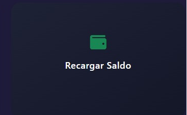
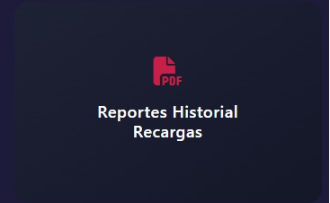
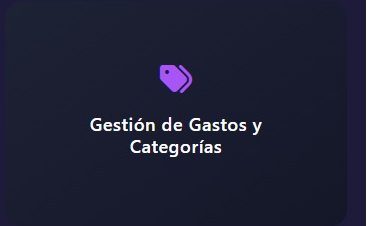

Plataforma para centros educativos y gestión académica
Wallet SICAI es una plataforma académica diseñada para la administración de fondos estudiantiles. Permite consultar el saldo de manera rápida, gestionar recargas y gastos, y generar reportes en PDF. Su objetivo es brindar transparencia y eficiencia en la gestión financiera de los estudiantes.
Permite verificar rápidamente los datos de la cuenta estudiantil.

Facilita la recarga de fondos de manera segura y transparente.
Visualiza los gastos realizados y organiza las categorías.
Consulta las recargas realizadas para cada estudiante.

Genera reportes en PDF con el historial de recargas.

Administra las categorías de gastos y se crean gastos para cada estudiante.